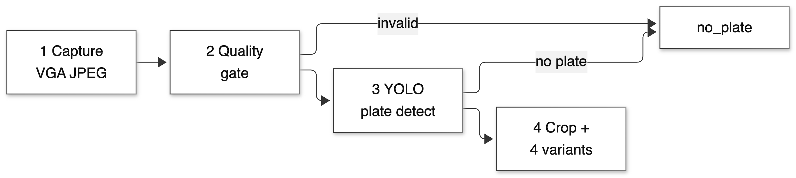
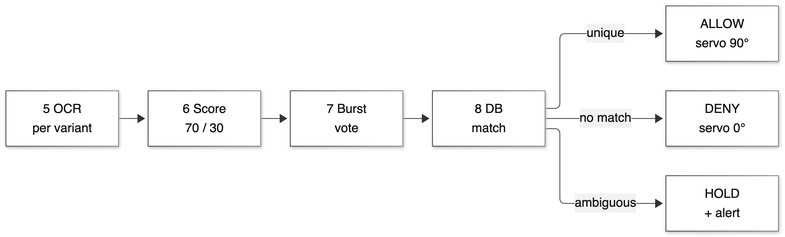
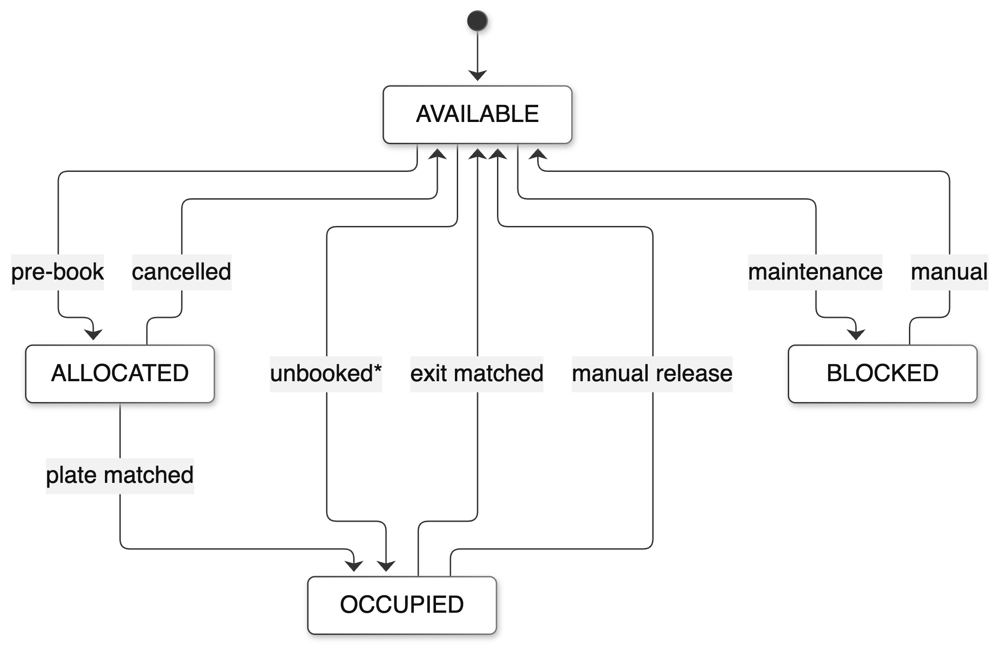
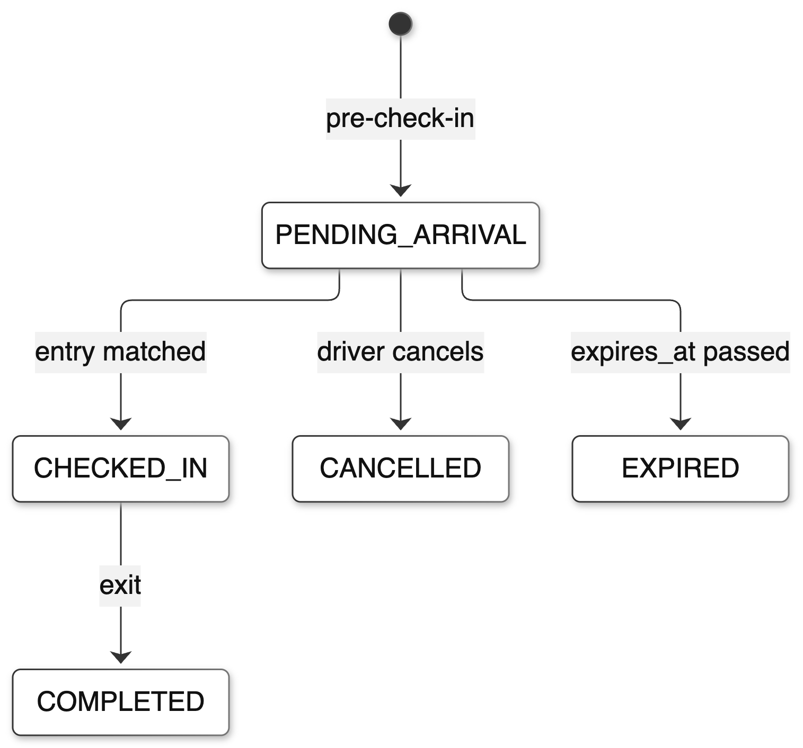
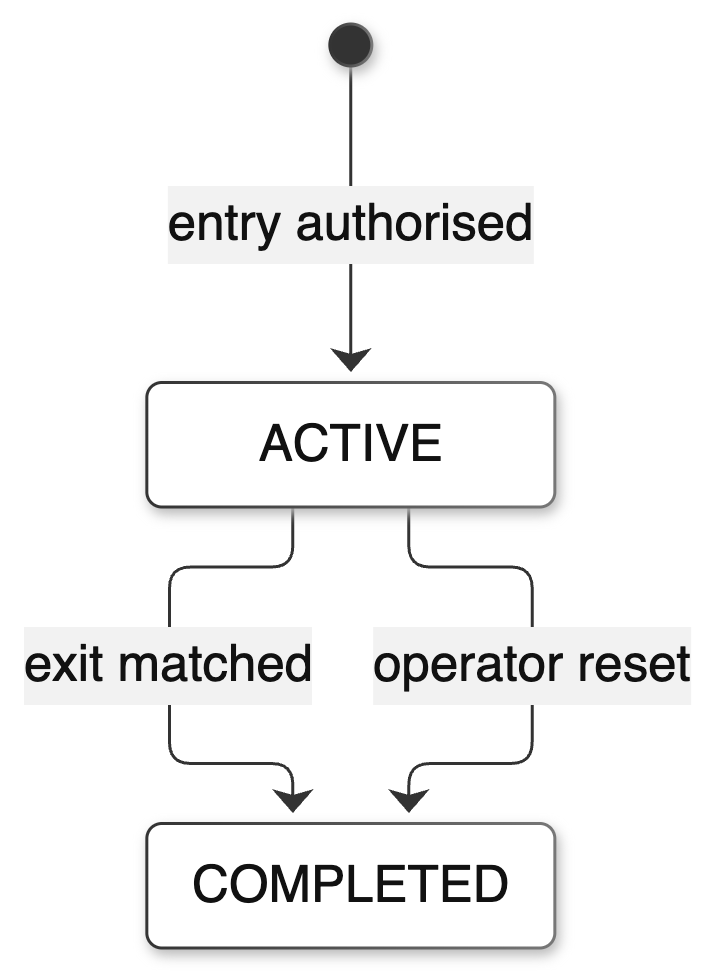
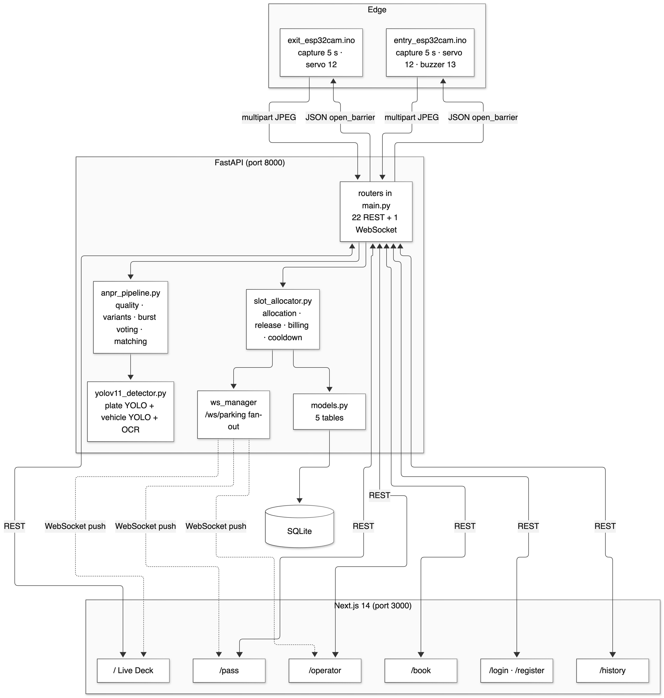
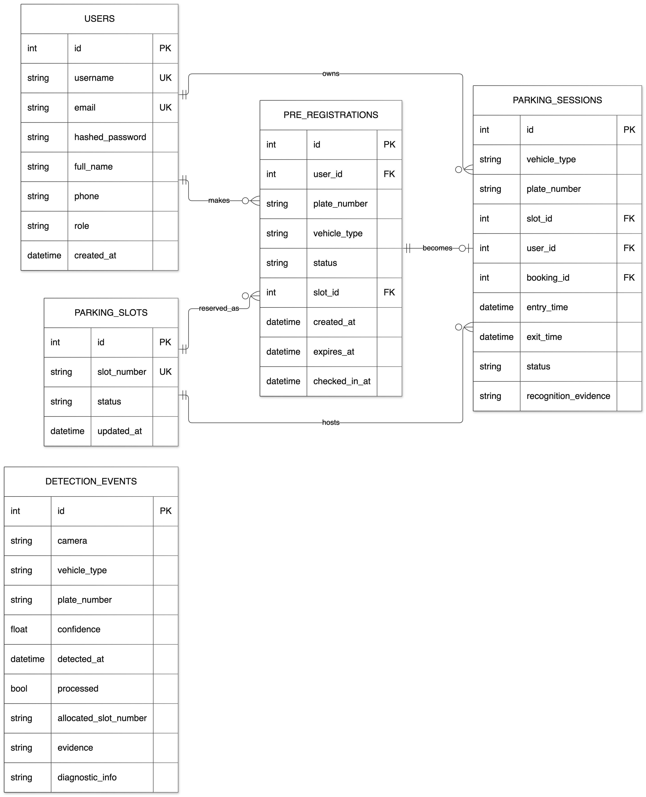

This chapter lists the hardware and software actually used to build and run the system, with the version of each component as it appears in the repository, and explains in one or two sentences why that tool was chosen for the problem rather than a more capable alternative. Three constraints governed the selection: the rig had to be affordable within a department project budget, the stack had to run unattended on a single laptop on the facility LAN, and every component had to be something the team could debug at source level when it failed during a demonstration.
The hardware is deliberately minimal: two camera nodes, two servos and the material to mount them. There is no single-board computer at the gate, no sensor in any bay, and no router beyond the department Wi-Fi access point. The camera node is an ESP32-CAM with the AI-Thinker pinout, an OV2640 sensor and 4 MB of PSRAM; the PSRAM matters because it allows a 640×480 JPEG to be captured and buffered without dropping frames. The actuator is an SG90 micro-servo, which is position-controlled and therefore needs no limit switches, at the cost of torque and of having no position feedback. A passive buzzer provides an audible confirmation at the entry gate and can be disabled in firmware.
| # | Component | Qty | Specification as used | Role in the system |
|---|---|---|---|---|
| 1 | ESP32-CAM (AI-Thinker) | 2 | ESP32 dual-core 240 MHz, 520 KB SRAM, 4 MB PSRAM, OV2640 camera, 802.11 b/g/n | Captures a VGA JPEG every five seconds and drives the servo on command |
| 2 | USB-TTL programmer (3.3 V) | 1 | FTDI-compatible, 3.3 V logic | Flashing the ESP32-CAM, which has no USB port |
| 3 | SG90 micro-servo | 2 | 180° travel, 4.8–6 V, ~1.8 kg·cm stall torque | Boom barrier arm: 0° closed, 90° open, five-second hold |
| 4 | 5 V 2 A adapter | 2 | Regulated 5 V, 2 A, common ground with the board | Separate supply for servo and board to avoid brown-out resets |
| 5 | Active buzzer | 1 | 5 V active buzzer on GPIO 13 | Audible confirmation of an admitted entry; optional |
| 6 | Jumper wires and breadboard | — | Male-to-female dupont leads | Prototyping the node without soldering |
| 7 | Boom arm material | 2 | Lightweight cardboard and 3D-printed bracket | Visible barrier arm attached to the servo horn |
| 8 | Mounting hardware | — | Cable ties, base plates, clamps | Fixing camera and servo at the gate |
| 9 | Host laptop | 1 | macOS, Python 3.13, Node.js 26, 8 GB RAM | Runs the backend, the database, the models and the web client |
| 10 | Facility Wi-Fi / LAN | 1 | 802.11n, 2.4 GHz, 192.168.0.0/24 | Carries camera uploads, browser traffic and WebSocket events |
Two details of the hardware design are worth recording because they caused most of the bench problems. First, the servo must not be powered from the ESP32-CAM 3.3 V pin; the current draw at stall resets the board, and the symptom looks like a software fault. A separate 5 V rail with a common ground, and a 470–1000 µF electrolytic capacitor across the rail near the servo, removes the resets. Second, the ESP32-CAM has no USB port, so the programmer must be connected with GPIO 0 held low at boot; the AI-Thinker board silkscreen labels this poorly, and a node that appears dead is usually a board that never entered flash mode.
The software stack is a conventional Python service with a JavaScript client. FastAPI was chosen because it gives a typed request/response contract and automatic OpenAPI documentation with very little code; SQLAlchemy because the models are simple and the same code would run on PostgreSQL if the deployment grew; SQLite because a single lot with a handful of clients needs no database server; and Next.js because the dashboard needs both server-rendered pages and a long-lived WebSocket connection in the browser. The recognition stack is Ultralytics YOLO11 for localisation, EasyOCR for character recognition, and OpenCV for the quality gate and the preprocessing variants.
| Layer | Technology | Version in repository | Role |
|---|---|---|---|
| Edge firmware | Arduino C++ (ESP32 core) | — | Capture, HTTP POST, JSON parse, servo control |
| Plate detection | YOLOv11 (Ultralytics) | ultralytics (not pinned) | Locates the plate region in the frame |
| Plate reading | EasyOCR | not listed in requirements | Recognises characters and returns per-token confidence |
| Image processing | OpenCV (headless) | ≥ 4.8.0 | Quality metrics, CLAHE, adaptive and Otsu thresholding |
| Backend framework | FastAPI | ≥ 0.100.0 | REST and WebSocket API, validation, OpenAPI docs |
| ASGI server | Uvicorn | ≥ 0.22.0 | Serves the API, single process |
| ORM | SQLAlchemy | ≥ 2.0.0 | Models, queries, transactions |
| Database | SQLite | Python standard library | Persistence in backend/autopark.db |
| Authentication | PyJWT + bcrypt | ≥ 2.8.0, ≥ 4.0.0 | HS256 tokens and salted password hashing |
| Frontend framework | Next.js (App Router) | ^14.2.5 | Routing and rendering |
| UI runtime | React | ^18.3.1 | Components and client state |
| Language | TypeScript | ^5.5.4 | Type safety on the client |
| Styling | Tailwind CSS | ^3.4.7 | Design tokens and layout utilities |
| Icons and motion | lucide-react, Framer Motion | ^0.417.0, ^11.3.19 | Consistent line icons; modal and card transitions |
| Testing | pytest, httpx | ≥ 7.4.0, ≥ 0.24.0 | Automated verification against an isolated database |
| Editor and toolchain | Arduino IDE, VS Code, Git | — | Firmware, source and version control |
YOLOv11 and EasyOCR. The detector is used only for localisation, not for recognition. It is loaded from backend/models/license_plate_best.pt and the plate pass is invoked with a deliberately permissive inference threshold of 0.10: a crop that is likely to contain a plate but not certain is still worth passing to the OCR stage, because the OCR confidence and the matching policy provide the real decision. Acceptance at 0.75 is applied to the frame confidence after voting, not before. A general vehicle model (yolo11n.pt) is also loaded to classify the vehicle type for the receipt, but the plate model is the one that gates access.
OpenCV. OpenCV is used for three things: the sharpness, brightness and contrast metrics that form the quality gate; the four preprocessing variants (adaptive threshold, inverted adaptive threshold, Otsu and CLAHE); and the debug artefacts that the diagnostics endpoint can return. It is not used for detection or recognition, because classical computer vision is exactly what the detector replaced.
FastAPI and Uvicorn. The service exposes twenty-two REST routes and one WebSocket route. FastAPI's dependency system supplies a database session per request and a current-user dependency for the account routes; its response models keep the contract between the backend and the browser explicit, which is what allowed the client to be written against the schema rather than against prose.
Next.js, React and Tailwind. The client has eight pages, of which five are part of the demonstration flow. The App Router allows the layout, sign band and navigation to be rendered once and the live data to be fetched on the client, where the WebSocket lives. Tailwind carries the design tokens, so the colour of a status is defined once and used consistently in the plan, the table and the legend.
Arduino core for ESP32. The firmware is two sketches of about 350 lines each. They do not contain business logic. The entry sketch captures a frame, posts it to /api/detection/entry, parses the JSON response with ArduinoJson, and moves the servo to 90° for five seconds if and only if open_barrier is true. The exit sketch is the same without the buzzer. Keeping the firmware this small is a design decision (Section 5.5), not a limitation of the toolchain.
The backend runs under /opt/anaconda3/bin/python3 (Python 3.13.9) because the default interpreter on the host machine does not carry SQLAlchemy and the vision dependencies. Both services are started detached by scripts/host.sh, which writes logs to .run/; the frontend runs on port 3000 and the API on port 8000, and the cameras are pointed at the host laptop's LAN address. There is no cloud dependency, no external database and no TLS terminator: this is a LAN deployment, which is the realistic topology for a gate system. The consequences of that choice — clear-text credentials on the LAN, no rate limiting, unauthenticated detection routes — are listed as limitations in Chapter 13 rather than hidden.
One packaging defect is recorded here because it affects reproducibility: requirements.txt lists the web, database and OpenCV dependencies but omits both easyocr and ultralytics. A clean install therefore produces a backend that starts and serves the dashboard but cannot run live recognition. The defect is carried in the defect log (Table 16) and the fix is part of the future work in Chapter 15.
This chapter gives the algorithms that implement the design concepts of Chapter 5, the flow charts that show the order of the stages, the data-flow view of the system, and the state machines that define the legal transitions of a bay, a booking and a session. The algorithms are written in a pseudocode close to the Python implementation so that they can be checked against the code, and each is followed by a short discussion of the decisions it encodes.
The recognition pipeline turns one JPEG frame into a ranked list of plate candidates, or into an explicit failure with a stage label. It is deliberately not a black box: every stage can fail, and the failure is reported with the reason rather than collapsed into “no plate found”.
Algorithm 1 RecognisePlate(frame)
1 q ← AssessQuality(frame) # sharpness, brightness, contrast
2 if q.grade = invalid then return no_plate(stage=camera_quality)
3 box, conf ← PlateDetector(frame) # YOLOv11, inference threshold 0.25
4 if box is empty then return no_plate(stage=plate_detection)
5 crop ← frame[box]
6 variants ← [adaptive, adaptive_inv, otsu, clahe](crop)
7 candidates ← ∅
8 for each v in variants do
9 text, c ← Ocr(v, allowlist="A-Z0-9")
10 if length(text) ≥ 3 and distinct(text) ≥ 2 then
11 candidates ← candidates ∪ {(text, c, v)}
12 if two variants agree on a text of length ≥ 6 with c ≥ 0.75
13 then break # short-circuit, keep the common case fast
14 for each distinct text t in candidates do
15 votes(t) ← |{v : v produced t}| / V
16 score(t) ← 0.70 · max_conf(t) + 0.30 · votes(t)
17 return candidates ranked by (score, votes)
Two details of the algorithm carry most of the weight. The short-circuit at step 12 is what keeps the common case fast: when two variants agree on a long, confident reading, the remaining variants add little and cost an OCR pass each. The scoring at step 16 is what makes agreement count as evidence: a reading seen in three of four variants at 0.78 confidence outranks a reading seen once at 0.80, because the second is more likely to be an artefact of one binarisation. The weights (0.70 confidence, 0.30 agreement) are a design choice, not a fitted parameter, and they are stated as such.

A single frame is a single sample, and motion blur or JPEG compression can make any one frame unreliable. The pipeline therefore accumulates candidates over a short burst before deciding. The burst window is five seconds, which matches the capture interval of the camera, and at most three frames are merged. A candidate seen in all three frames is promoted over one seen once, even if the latter has a higher single-frame confidence:
frame_boost = 0.75 × max_conf + 0.25 × frame_ratio
where frame_ratio is the fraction of frames in the burst that produced the candidate. This is the practical answer to the question “what if one frame is bad?”: the system waits for corroboration instead of trusting the first read, and it does so within the same five-second rhythm as the camera, so a moving vehicle is still served promptly.
Allocation is the point at which recognition becomes a physical decision. The algorithm applies the four refusal gates of Section 5.3 in a fixed order, and it holds a single in-process lock while it checks and commits, so two frames arriving together cannot both see the same bay as free.
Algorithm 2 AllocateEntry(plate, confidence, candidates)
1 if confidence < 0.75 then return ignored
2 if no candidate has ≥ 4 alphanumeric characters then return no_plate
3 acquire allocation_lock:
4 if plate matches an ACTIVE session then return already_allocated
5 if the same canonical plate was seen within 10 s then return already_allocated
6 match ← unique booking in PENDING_ARRIVAL scoring ≥ 0.72
7 if match is ambiguous (top two within 0.10) then return ambiguous
8 if match is none then
9 if not ALLOW_WALKIN_ENTRY then return unauthorized
10 bay ← match.slot_id if it is still free, else lowest-numbered free bay
11 if no bay then return parking_full
12 bay.status ← OCCUPIED
13 if match then match.status ← CHECKED_IN
14 create session(ACTIVE, plate, bay, match, evidence)
15 write detection_event(plate, confidence, candidates, decision)
16 broadcast slot.allocated
17 return {status: allocated, slot: bay, open_barrier: true}
Three properties of this algorithm are worth stating explicitly. First, the booked bay wins over the lowest-numbered bay: step 10 reads the booking's slot identifier before falling back, which is the fix for a real defect in which the driver was sent to a different bay from the one reserved (D-01 in Table 16). Second, duplicate frames are suppressed twice, once by the active-session check and once by a ten-second per-plate cooldown, because the camera posts every five seconds and a stationary car at the gate would otherwise generate two allocations. Third, the walk-in path is a policy switch, not a separate endpoint: an unreserved vehicle is admitted only when ALLOW_WALKIN_ENTRY is active, and it draws only from bays that are actually free, so it can never take a bay that is held by a booking.
Algorithm 3 ReleaseExit(plate, confidence, candidates)
1 if confidence < 0.75 then return ignored
2 matches ← ACTIVE sessions scoring ≥ 0.72 against the candidates
3 if matches is empty then return no_active_session
4 if top two scores are within 0.10 then return ambiguous
5 session ← the unique winner
6 session.status ← COMPLETED; session.exit_time ← now (server UTC)
7 bay.status ← AVAILABLE; booking.status ← COMPLETED
8 d ← max(1, floor((exit_time − entry_time) / 60)) # whole minutes
9 amount ← 30 if d ≤ 60 else 30 + ((d − 1) div 60) × 20
10 write detection_event(plate, confidence, candidates, decision)
11 broadcast slot.released, vehicle.exited, barrier.exit
12 return {status: released, slot, duration_minutes: d, billed_amount: amount,
open_barrier: true}
The billing formula is the only place in the system where money is computed, and it is computed on the server so that the receipt cannot be edited by the client. The tariff is ₹30 for the first hour and ₹20 for every additional started hour; a stay of sixty minutes bills ₹30, sixty-one minutes bills ₹50, and one hundred and twenty-one minutes bills ₹70. Duration is floored to whole minutes and clamped to a minimum of one, so a vehicle that enters and leaves within the same minute is still billed for one minute rather than zero.
Figure 3 shows the decision half of the pipeline as a flow chart. The three outcomes on the right — allow, deny and hold — correspond exactly to the three physical behaviours of the barrier: open, remain closed, and remain closed with an operator alert. The chart is drawn with a single decision point for each gate so that the order of the gates is visible: quality, detection, reading, scoring, voting, matching, and finally the choice between allow, deny and hold.

At level 0 the system is a single process that receives frames from two cameras and commands from two clients, reads and writes one database, and returns barrier commands and state to the same parties. At level 1 the process divides into four stores and five transformations: the frame store (transient), the session store, the booking store and the detection-event store; and the transformations assess, read, match, allocate and release. The context diagram of Fig. 1 is the level-0 view; the component view of Fig. 7 in Chapter 9 is the level-1 view. The important data-flow property is that no transformation writes to the session store without also writing a detection event, so the audit trail cannot diverge from the state.
Three state machines define the legal transitions in the system. They are small enough to be checked by inspection, and together they encode the invariants of Section 5.8.
Parking bay. A bay is created AVAILABLE. A pre-booking moves it to ALLOCATED and holds it. A matched entry moves it to OCCUPIED; an exit match, an operator release or a facility reset returns it to AVAILABLE. A bay can be moved to BLOCKED for maintenance and back. No transition into OCCUPIED is possible without a session, and no transition out of OCCUPIED is possible while a session is active.

Booking. A booking is created PENDING_ARRIVAL with a bay and an expiry time. It becomes CHECKED_IN when the vehicle arrives, CANCELLED when the driver cancels, EXPIRED when the expiry passes without arrival, and COMPLETED when the corresponding session closes. Every terminal state releases the bay, which is what prevents the phantom occupancy defect recorded as D-02.

Session. A session is created ACTIVE at entry and becomes COMPLETED at exit or on an operator reset. There is no suspended state and no re-open path, which keeps the occupancy query trivial: a bay is occupied if and only if there exists a row with status ACTIVE that references it.

Canonical match. A booking exists for KA05KK0403. The camera reads KA05KK04O3, with the letter O in place of the final zero. Both strings canonicalise to KA05KK0403 through the confusion map, so the similarity is 0.92. The OCR confidence for the candidate is 0.91, so the adjusted score is 0.92 × (0.80 + 0.20 × 0.91) = 0.92 × 0.982 = 0.90, which is above the 0.72 threshold. The vehicle is admitted and the attendance is recorded against the booking.
Ambiguity refusal. Two bookings exist, for KA05KK0403 and KA05KK0404. The camera reads KA05KK0405, which is one edit from each. Both score 0.85, the gap is 0.00, and the ambiguity rule fires: the barrier stays closed and the operator sees both candidate plates. The system has not guessed, and the driver is asked to present the plate again rather than being sent to a bay that may belong to someone else.
Billing boundaries. A stay of 60 minutes bills ₹30; 61 minutes bills ₹50; 120 minutes bills ₹50; 121 minutes bills ₹70. The boundary behaviour is deliberate: the first hour is a block, and each additional started hour is a block, so the charge never decreases as the stay grows and never charges a partial hour as a full one.
This chapter explains, in one continuous narrative, how the system works: what happens between the moment a vehicle approaches a gate and the moment the barrier moves, and why each step is necessary. The algorithms of Chapter 7 give the precise order of operations; this chapter gives the mechanism and the reasoning behind it.
A parking bay is free if and only if a vehicle has entered the facility and has not yet left it. Everything else follows from that sentence. The entry gate is the only place where a vehicle can begin to occupy a bay, the exit gate is the only place where it can stop occupying one, and the database — not a sensor inside the lot — is the record of both events. The two cameras are therefore not measuring parking spaces; they are observing the boundary of the facility, and the occupancy of every space is derived from those boundary observations.
The entry node wakes on a five-second cycle, captures a 640×480 JPEG and posts it as a multipart request to /api/detection/entry. The request carries no decision and no state; the node does not know whether the vehicle is expected. On the server, the frame is first graded. The variance of the Laplacian measures sharpness, the mean pixel intensity measures exposure, and the standard deviation measures contrast; a frame that is too blurred, too dark or too flat is labelled and the pipeline stops there, because running a detector on a frame that cannot possibly yield a readable plate wastes two seconds of OCR and produces a misleading confidence. The grade is recorded with the frame, so a refusal caused by the camera can be distinguished from a refusal caused by an unknown plate.
If the frame passes the quality gate, the plate detector returns a bounding box and a confidence. The crop inside the box is then normalised in four different ways — adaptive threshold, inverted adaptive threshold, Otsu threshold and CLAHE — because no single binarisation works across the lighting conditions a gate camera sees in a day. Each variant is passed to the OCR engine with an alphabet restricted to capital letters and digits, which removes punctuation noise, and the results are sorted top-to-bottom and then left-to-right so that a two-line plate concatenates in the right order. The candidates are scored for confidence and for agreement between variants, and the burst accumulator merges them with candidates from the previous frames in the same five-second window.
The highest-scoring candidate is then compared with the bookings that are waiting for arrival. The comparison is not a string equality test: both strings are canonicalised through a map of visually confusable characters, the residual distance is measured, and the resulting similarity is discounted by the OCR confidence. A booking matches if the adjusted score is at least 0.72. If exactly one booking matches, the vehicle is admitted to the bay that the booking holds. If no booking matches and walk-in admission is enabled, the vehicle is admitted to the lowest-numbered free bay, and the bay is highlighted on the dashboard so the driver can see where to go. If two bookings match within 0.10 of each other, the system refuses and raises an alert. If no bay is free, the status is parking_full and the display says the lot is full rather than that the vehicle is unknown, because those are different problems for the driver.
Admission is a single database transaction: the bay becomes OCCUPIED, the booking becomes CHECKED_IN, a session becomes ACTIVE, and a detection event is written with the plate, the confidence, the candidate list and the decision. Only after the transaction commits does the server return open_barrier: true. The firmware reads that boolean and, if it is true, rotates the servo to 90°, waits five seconds and returns it to 0°. If the response is delayed, malformed, or reports any other status, the arm does not move. This ordering matters: the barrier is a consequence of a committed decision, never a cause of one.
The exit path is the mirror image, with one difference in consequence. The frame is read in the same way, but the candidates are compared against ACTIVE sessions rather than pending bookings. A unique match closes the session, records the exit time, frees the bay, completes the booking, computes the duration in whole minutes and applies the tariff. The response carries the released bay, the duration and the amount, and the client renders an itemised receipt. If the plate matches no active session, the barrier stays closed and the operator is alerted. If it matches two, the system holds rather than guessing, because releasing the wrong bay would free a space that is still occupied.
The asymmetry is deliberate. At entry, a false admit puts a vehicle into a bay that may belong to someone else; at exit, a false release frees a bay that is still occupied and produces a bill for the wrong vehicle. Both corrupt the same derived state, and both are prevented by the same rule: the system acts only when the evidence resolves to exactly one interpretation.
The principle works because the two events that change occupancy are exactly the two events that a gate can observe reliably. A vehicle cannot enter a lot without passing the entry gate, and it cannot leave without passing the exit gate; every other movement inside the lot is irrelevant to the count. This is the same reasoning that makes a ticket-based car park work, with the ticket replaced by a plate read. It is also why the architecture can be constant in cost: the number of observations needed is two per vehicle movement, regardless of how many bays the movement affects.
The principle also has a known cost, and the system is designed around it rather than pretending it does not exist. If a vehicle leaves and its plate is never read — because the camera was blinded by headlights, or the plate was dirty, or the vehicle left during a network outage — the bay remains occupied until a person intervenes. The manual release path exists for exactly this case, it is available in the operator console, and it writes an audit entry. A per-bay sensor would not have this failure mode. The project's claim is not that the derived state is as robust as a measurement; it is that the derived state is accurate enough for a small lot, that its failure mode is visible and recoverable, and that it removes a cost that grows with the size of the lot.
Because the barrier is fail-closed, the failure of any component between the camera and the database results in a closed gate rather than an open one. A camera that loses Wi-Fi keeps retrying every five seconds and the barrier stays down. A backend that is restarted loses no lot state, because the state is in SQLite, and the cameras resume posting as soon as the service answers. A browser that disconnects re-reads a snapshot on reconnect and then resumes the stream, so a laptop that sleeps does not leave a stale occupancy map on screen. The operator console reports a camera as offline after thirty seconds without a frame, which is long enough to survive a dropped packet and short enough to be noticed during a demonstration.
This chapter presents the system as a set of blocks and then at the level of a single gate node. The block diagram shows what talks to what and, more importantly, where the state lives; the circuit diagram shows how one ESP32-CAM is wired to its servo, its buzzer and its supply, because the same wiring is repeated at both gates.
Figure 7 divides the system into an edge block, an application block, a data block and a presentation block. The arrows carry either a frame (camera to server), a command (server to actuator), a query (client to server) or an event (server to client). No arrow carries state from a camera to another camera, and no arrow carries occupancy from the server to the database: the database is written by the server and read by the server, and the clients only ever read a projection of it.

Figure 8 shows the electrical connections for one gate node. The ESP32-CAM is powered from the 5 V rail; the servo is powered from the same rail but through its own pair of leads, with the signal wire on GPIO 12 and the grounds tied together. The optional buzzer sits on GPIO 13 through a current-limiting resistor. The capacitor across the 5 V rail is not decorative: it supplies the surge current when the servo starts moving and prevents the brown-out reset that otherwise looks like a firmware crash.
Table 7 gives the pin assignment for both nodes. GPIO 12 and GPIO 13 are used because they are free on the AI-Thinker camera pinout: most other pins are consumed by the camera bus or by the flash interface, and choosing a pin that looks free in a generic ESP32 diagram is the most common wiring mistake on this board.
| Signal | ESP32-CAM pin | Notes |
|---|---|---|
| Servo signal (orange / yellow) | GPIO 12 | PWM control; 0° closed, 90° open |
| Servo VCC (red) | 5 V rail | Not 3.3 V — brown-outs and jitter otherwise |
| Servo GND (brown / black) | GND | Must share ground with the ESP32-CAM |
| Buzzer + (optional) | GPIO 13 | Active buzzer; disabled by setting the pin to −1 |
| Buzzer − | GND | — |
| Camera | Internal AI-Thinker header | Y2…Y9, XCLK, PCLK, VSYNC, HREF, SIOD, SIOC, PWDN, RESET |
Tables 8 and 9 give the point-to-point wiring for the two nodes. The only difference between them is the buzzer, which is present at the entry gate so that a driver receives an audible confirmation, and omitted at the exit gate to keep the departure quiet.
| From | To | Purpose |
|---|---|---|
| ESP32-CAM 5V | 5 V rail | Board power |
| ESP32-CAM GND | Common GND | Reference for the PWM signal |
| GPIO 12 | Servo signal | Barrier PWM |
| 5 V rail | Servo VCC | Torque supply |
| Common GND | Servo GND | Return |
| GPIO 13 | Buzzer + | Confirmation chirp (optional) |
| GND | Buzzer − | Return |
| From | To | Purpose |
|---|---|---|
| ESP32-CAM 5V | 5 V rail | Board power |
| ESP32-CAM GND | Common GND | Reference for the PWM signal |
| GPIO 12 | Servo signal | Barrier PWM |
| 5 V rail | Servo VCC | Torque supply |
| Common GND | Servo GND | Return |
The supply is a single 5 V 2 A adapter per node, distributed to the board and to the servo. The board's regulator supplies the camera; the servo is fed directly from the rail. The grounds are common. A 470–1000 µF electrolytic capacitor sits across the rail close to the servo to absorb the inrush when the arm starts moving. The measured consequence of omitting the capacitor is visible on the bench: the board resets at the moment the servo starts, the serial log restarts, and the barrier occasionally twitches instead of sweeping. It is a power problem that presents as a software problem, and it is listed first in the troubleshooting guide in the appendix.
The barrier is controlled by one boolean in the response, not by an action verb. The complete contract for an admitted entry is shown below; the exit response has the same shape with the released bay, the duration and the amount.
{
"status": "allocated",
"slot": "A2",
"open_barrier": true,
"barrier_action": "OPEN",
"trigger_buzzer": true
}
The firmware decision is equally small. Anything other than an explicit true leaves the arm where it is:
bool open_barrier = doc["open_barrier"] | false;
if (open_barrier || trigger_buzzer) {
openEntryBoomBarrier(); // 90 degrees -> 5000 ms -> 0 degrees
} else {
// gate stays at 0 degrees
}
Table 10 states the outcomes for every status the backend can return. The table is the specification against which the firmware is reviewed, and it is the reason the system can be described as fail-closed: there is no row in which an error, a missing field or an unknown status results in an open barrier.
| Backend outcome | open_barrier | Entry barrier | Exit barrier | Operator sees |
|---|---|---|---|---|
| allocated (valid booking) | true | OPEN 90° / 5 s | — | Bay number, plate, confidence |
| released (valid session) | true | — | OPEN 90° / 5 s | Duration and amount |
| unauthorized | false | closed 0° | — | Plate plus alert |
| no_plate | false | closed 0° | — | Failure stage and quality grade |
| ambiguous | false | closed 0° | closed 0° | Both candidate plates |
| no_active_session | false | — | closed 0° | Plate plus alert |
| parking_full | false | closed 0° | — | Full-lot alert |
| already_allocated | false | closed 0° | — | Existing bay for that plate |
| timeout / malformed / unknown | absent | closed 0° | closed 0° | Camera marked offline after 30 s |
This chapter describes how the work was carried out: the phases, the development method, the data design, the way the system was verified, and the protocol that must be followed to turn the recognition results from observations into measurements. The method was iterative rather than waterfall, but the phases are described in the order in which they were completed so that the dependencies between them are visible.
The project used a short-cycle iterative method. Each cycle addressed one vertical slice of the system — recognition, then allocation, then billing, then the operator view — and ended with the slice running end to end against the real database, not against a mock. This was chosen because the integration points were the risky part: a detector that works on a still image and an allocator that works on a test fixture can still fail when a real frame arrives while a booking is expiring. Building vertically meant that every week produced something demonstrable, and that the defect log grew from real integration rather than from code review.
Two practices were adopted from the start and are visible in the repository. The first is a single source of truth for state: no component was allowed to cache occupancy, and every screen reads the server. The second is that every change to the allocation or billing logic had to be accompanied by a check in the automated suite, which is why the suite is written around the eight scenarios of Table 14 rather than around units of code.
Table 11 lists the phases, the main activities in each, and the artefact that was produced. The phase boundaries are not arbitrary: each one ends with something that can be inspected or executed by someone other than its author.
| Phase | Focus | Main activities | Deliverable |
|---|---|---|---|
| P1 | Problem definition | Field observation, literature survey, scope negotiation with the guide | Problem statement, objectives, scope boundary |
| P2 | Architecture | Layer selection, state ownership, API surface, schema design | Context and component diagrams, database schema |
| P3 | Recognition | Dataset collection, YOLO fine-tuning, variant design, OCR scoring, burst voting | Working pipeline with per-stage diagnostics |
| P4 | Authorisation and allocation | Booking model, matching rules, allocator, cooldown, walk-in policy | Allocator with eight decision statuses |
| P5 | Billing and audit | Tariff implementation, session closure, detection-event log | Receipt path and evidence table |
| P6 | Client | Live deck, booking, pass, receipts, operator console, design tokens | Eight-page Next.js application |
| P7 | Hardware | Node assembly, servo calibration, power topology, firmware | Two gate nodes and the barrier contract |
| P8 | Verification | Automated suite, interface checks, defect fixing, regression checklist | 15/15 automated checks, defect log |
| P9 | Evaluation | Diagnostic capture, metric definitions, measurement protocol | Results chapter and pending-measurement list |
| P10 | Documentation | Report, diagrams, appendix, demonstration script | This report |
The data model was designed before the recognition pipeline, because the decision the pipeline has to support is a database question: does this plate correspond to exactly one pending booking or active session? Five tables are enough. Figure 9 shows the entity–relationship diagram. The session table is the occupancy authority; the detection-event table is the evidence authority; the booking table is the reservation authority; and the slot table is the inventory. The user table exists only to scope bookings and receipts to an account.

Three schema decisions are worth recording. The evidence column on a session stores the recognition evidence as a JSON string rather than a normalised structure, because it is written once and read for audit rather than queried by field. The booking carries a concrete slot identifier rather than a zone preference, because the driver is promised a specific bay and a promise that names a zone is not a promise. And the detection-event table stores the failure stage even when no plate was found, which is what makes it possible to say afterwards whether a refusal was caused by the camera, the detector or the matcher.
Verification was organised in six levels, from a unit check of the billing formula to a dry run of the demonstration script. The automated suite starts its own backend on an isolated port with a temporary SQLite file, so it can be run during development without disturbing the demonstration data. The suite is deliberately written against the HTTP surface rather than against internal functions, because the contract between the firmware and the server is the part that has to be right at the gate. The levels and the results are reported in Chapter 12.
Recognition accuracy and latency are properties that must be measured, not asserted, and they have not yet been measured on this build. The protocol is fixed here so that the numbers, when they are produced, are comparable and honest. It follows the usual practice in the ANPR literature of reporting per condition rather than as a single average [3].
Sampling. Use at least five distinct plates, including two that differ by one character, so that the ambiguity rule is exercised. For each plate, capture frames under four conditions: daylight frontal, low light, angled at about 30°, and motion blur.
Volume. At least ten frames per plate–condition pair, giving at least two hundred frames in total, with a ground-truth CSV recording the frame, the true plate and the condition.
Execution. Post each frame to the detection endpoint with a known booking state, or run the pipeline offline, and log the status, the selected plate, the confidence and the failure stage for every frame.
Metrics. Plate detection rate (frames with a plate box divided by frames containing a plate); exact recognition rate (readings exactly equal to ground truth divided by frames with a detected plate); matcher-accepted rate (readings accepted as the correct vehicle divided by frames with a detected plate); false admit and false reject rates over the decision outcomes; and end-to-end latency from the start of the POST to the JSON response, reported as p50 and p95 over at least thirty runs with the hardware stated.
Honesty rule. A metric that has not been produced by this protocol is reported as not measured, not as an estimate. The two diagnostic records in Chapter 12 are single observations reproduced from the bench; they are labelled as such and are not presented as a benchmark.
The principal risks were recognition quality on a low-cost camera, power instability at the servo, and dependency drift in the Python environment. The first was mitigated by designing the refusal path before tuning the recognition pipeline, so that a poor read produces a defined refusal rather than an undefined failure. The second was mitigated by separating the servo supply and adding the capacitor, and by writing the bench checklist in the appendix. The third was mitigated by pinning the backend interpreter in the start script; the remaining packaging gap (easyocr and ultralytics absent from requirements.txt) is recorded as an open defect rather than dismissed.